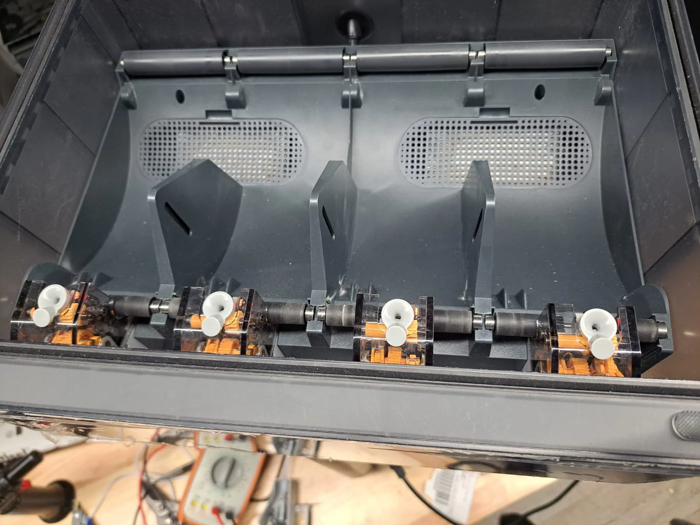

¿Tu AMS no carga el filamento o marca error?
El AMS se queda intentando cargar, no regresa el filamento al cambiar de color o marca error en una ranura. Muchas veces se arregla con la punta del filamento o el carrete; cuando no, son los motores, los tubos o los sensores.
Lo que casi siempre hay detrás

La punta del filamento
Una punta doblada, aplastada o con bolita no entra en el alimentador o no regresa. Si el cortador del cabezal no corta limpio, deja puntas así en cada cambio de color.
El carrete
Un carrete que no gira libre, filamento cruzado o carretes de cartón que se resbalan o sueltan polvo. El AMS jala, el carrete no cede y marca error.
Tubos y conexiones
Un tubo PTFE flojo, gastado o con una curva cerrada entre el AMS, el hub y la impresora frena el filamento.
Motores y sensores
Con el uso se gastan los engranes del alimentador o se ensucian los sensores que cuentan el filamento. Entonces el AMS no sabe dónde está la punta.
Lo que puedes revisar tú
Muchas veces se resuelve aquí. Si no, ya tienes la mitad del diagnóstico hecho.
- Corta la punta en diagonal
Saca el filamento de esa ranura, corta la punta limpia en diagonal y vuelve a meterlo hasta que el AMS lo jale solo.
- Gira el carrete a mano
Debe girar sin esfuerzo y sin que el filamento se cruce. Para carretes de cartón, usa un anillo adaptador.
- Encuentra dónde se atora
Desconecta el tubo a la salida del AMS y empuja el filamento a mano: si pasa ahí, el problema está más adelante (hub, tubo o cabezal).
- Actualiza el firmware
Revisa en la app que impresora y AMS tengan el firmware al día; varios errores de carga se corrigieron así.
Lo que hacemos en el taller
Abrimos el AMS, revisamos alimentadores, engranes, sensores, el hub y todos los tubos, y lo probamos cargando y cambiando de color con la impresora. Si la falla es solo del AMS, puedes traer nada más el AMS. La reparación tiene garantía de 90 días.
Diagnóstico — $300 MXN
Te decimos qué tiene, qué hay que cambiar y cuánto sale. Se cobra siempre, salga la reparación o no.
Mano de obra — $700 MXN
La reparación completa; $400 MXN si el diagnóstico ya se hizo aquí. Refacciones aparte, siempre con tu autorización.
Desde otro estado
Mándala por paquetería: en envío al taller cotizas la guía y te decimos cómo empacarla.
Lo que nos preguntan
¿Reparan el AMS lite de la A1?
Sí: AMS, AMS 2 Pro, AMS HT y AMS lite.
¿Tengo que traer la impresora?
Si el error es solo del AMS, basta con el AMS. Si sale al cargar en el cabezal, conviene traer los dos para probarlos juntos.
¿Cuánto cuesta la reparación?
El diagnóstico cuesta $300 MXN. La mano de obra de la reparación es $700 MXN, o $400 MXN si el diagnóstico ya se hizo aquí. Las refacciones van aparte y nunca se cambian sin que tú lo autorices.
No estoy en la Ciudad de México, ¿me la pueden reparar?
Sí. Recibimos impresoras de todo México por paquetería: en envío al taller cotizas la guía y te decimos cómo empacarla.
¿No se arregló? Tráela al taller
Elige el día y la hora para dejarla. Recepción de lunes a viernes de 12:00 a 18:00, en Av. División del Norte 1354, Piso 1, Letrán del Valle, Benito Juárez, CP 03650.